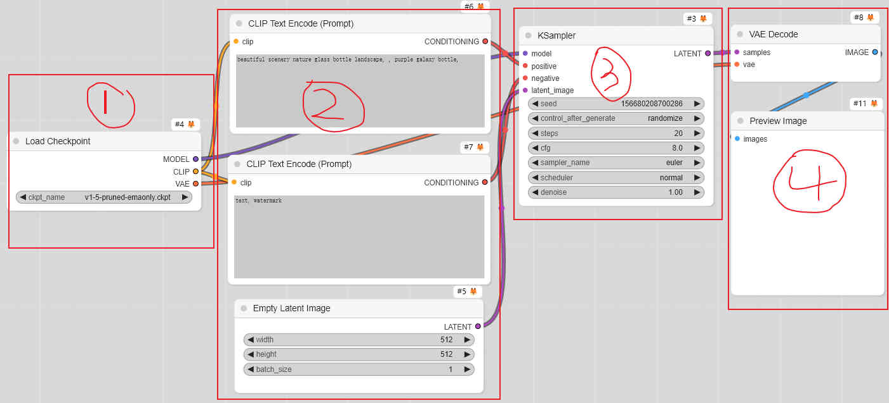
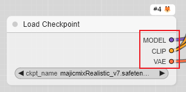
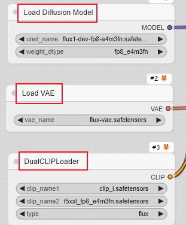

基本概念
上一章我们详细梳理了官方桌面版本的界面—-各种功能, 设置, 快捷键, 扩展等等.
这一章我们就来详细介绍基本概念, 其实也算不上基本概念, 就是对一些关键词的大白话描述, 能够简单理解就行, 需要深入研究, 问 AI 能够将实现细节, 以及背后的数学原理都讲清楚. 这里的基本概念仅限于图像生成, 而文本,音频和视频等生成将在后面介绍.
基本概念非常重要, 可以说, 在这个 AI 时代, 掌握基本概念是急速学习的秘诀. 不管学什么, 基本概念掌握了, 你就能够比较标准的组织相关领域的语言, 然后向装着全世界知识的 AI 提问, 他就能够给你很好的答案, 你也能够相对轻松地理解, 然后继续追问, 大踏步向着更专业迈进…
从基本工作流开始

一个完整的 ComfyUI 生图工作流, 大致可以分为 4 个阶段:
- 加载模型
- 输入, 预处理和设置参数
- 执行生成
- 后处理和输出结果
加载模型
目前知名的大模型有 SD 1.4, SD 1.5, SD 1.5 LCM, SD 1.5 Hyper, SDXL 1.0, SDXL Turbo, SDXL Lightning, SDXL Hyper, SD 3.5 Medium, SD 3.5 Large, SD 3.5 Large Turbo, Pony, Flux .1S, Flux.1 D, Stable Cascade, PixArt, Hunyuan, Kolors 等, 以及社区基于底模训练的各种版本, 非常丰富.
其中, 最常用的是 SD1.5, SDXL, SD3.5, Flux 四大类.
除了大模型, 还有与大模型配套的模型和组件, 主要有 CLIP, VAE, Lora, Controlnet 等.
对这些模型, 需要清楚下面几点:
-
大模型是基底, 生图时, 不同的大模型一般需要不同的 CLIP, VAE, Lora, Controlnet 等.
-
CLIP 是连接文本和图像的桥梁, 将输入的提示词 “翻译” 给计算机, 或反过来.
-
VAE 则是将我们人类看到的图像, 处理成计算机能理解的信号, 或反过来.
-
Lora 是基于特定大模型训练而来, 它就像一个 “说明书”, 告诉大模型, “你要给我这个样子的”, “你要给我这个风格的”… 因此训练 Lora 需要对用来训练的图像打标 (也就是将图像翻译成提示词), 做出一个说明书来, 生成的时候, 又用这个说明书 (触发词) 指导大模型生成. 基于同一个大模型版本训练的 Lora, 一般都能用, 但是出不出效果, 就要看训练 Lora 的人用的底模具体是哪个版本.
-
Controlnet 则是基于大模型版本训练, 相同版本的大模型都能用, 通常用于 图像到图像 的生成. 它像一个 “结构图”, 告诉大模型, “你要按照我这个结构来画”, 不要将 “春树秋霜图” 画成 “小鸡食米图”.
-
FP32, FP16, FP8, BF16 等, 表示模型权重的 数据类型 或 精度, FP32 提供高精度计算，FP16 和 BF16 提供更高效的计算, BF16 专门用于加速计算, 在精度方面，BF16 比 FP16 更能保留重要的信息，FP8 用于高效的计算，但会有精度损失. (还有整数精度的 INT8, INT16, INT32)
-
常见的模型的格式有:
.ckpt 文件：广泛使用，兼容性好。 但可能包含冗余信息，文件较大。
.safetensors 文件： 更安全，高效，文件较小。 需要特定的加载器支持。
.pt 或 .pth 文件： PyTorch 原生格式，兼容性好。 文件可能较大，需要 PyTorch 环境支持。
.bin 文件格式通常用于存储二进制数据，在深度学习和机器学习领域，.bin 文件则常用于存储模型的权重和配置信息
大模型可以将 CLIP 和 VAE 合并在一起, 这种版本的大模型, 加载时一般使用 Load Checkpoint 加载器:

否则, 加载大模型时, 一般使用 Load Diffusion Model 加载器 (这种大模型通常是 扩散模型Diffusion Model 和 UNet 模型), 并且 CLIP 和 VAE 需要单独加载:

Lora 和 Controlnet 则需要单独加载.
输入, 预处理和设置参数
-
提示词（Prompt）: 就是对你要生成的图像的自然语言描述. 正向提示词就是你要生成的结果; 负向提示词则是你不希望出现的结果.
-
文本预处理
分词：将文本分割成单词或子词，以便进行编码. 文本编码：将提示词转换为模型可以理解的嵌入向量。
提示词通过 CLIP 编码, 引导模型生成与描述词相符的图像. 提示词可以不输入, 也会生成随机噪声, 指导生成大模型 “记忆中” 的随机图像.
-
初始图像（Initial Image）
输入图像：在某些情况下，可以提供一个初始图像，模型会基于这个图像进行生成或变换。图像变换：如风格迁移、图像修复或图像增强等任务。
-
图像预处理
调整大小：将输入图像调整到模型所需的尺寸。归一化：将图像像素值归一化到模型所需的范围（通常是 0 到 1）。数据增强：如旋转、翻转、裁剪等，用于增加数据多样性.
-
Latent Image: 潜空间图像, 我们不理解但人工智能 “看” 得懂的图像. 如果需要用到 图生图, 则需要 VAE 编码为 Latent Image, 否则就生成一个空的 Latent Image, 它们都需要设置宽/高 (或者参考原图宽/高).
如果用到 图像缩放, 裁剪, 图生图, 图像重绘, 用 Controlnet 预处理, 条件组合, 参考 Lora 等, 则需要各种预处理以及参数设置. 具体细节将在下一章
内置节点对各种预处理节点详细介绍.
执行生成
执行生成, 就是采样器按照之前的各种预处理条件, 和设置的参数, 拿起神笔开始泼墨挥毫画画的过程.
参数详解:
-
seed: 种子, 真的就是一颗种子, 埋到土里, 能长小花还是小草, 这颗种子很重要. 种子可以用来确定生成图像的构图 (宽高比, 采样器不变).
-
图像生成后, 可以选择 fixed(固定), increment(增加), decrement(减小), randomize(随机化) 种子.
-
steps: 采样过程中的迭代次数, 步数 直接影响生成图像的质量、细节和计算效率。步数越多，生成过程的细节越丰富，生成结果的质量通常会更高，但同时，生成的时间和计算资源消耗也会增加, 需要一个平衡点. 复杂, 细节多的就增加步数.
-
CFG: 同一个模型, 较高的 CFG 值, 图像会更符合输入条件，生成内容更加集中和精确，但可能牺牲创意和多样性。适用于需要精确控制生成内容的任务。较低的 CFG 值, 图像生成过程更具随机性和创意，适用于需要多样性或探索更多可能性的任务，但可能导致与输入条件不太一致的结果. 不同模型, CFG 值的最佳范围可能不同.
-
采样器: 目前 ComfyUI 有
euler
euler_cfg_pp
euler_ancestral
euler_ancestral_cfg_pp
heun
heunpp2
dpm_2
dpm_2_ancestral
Lms
dpm_fast
dpm_adaptive
dpmpp_2s_ancestral
dpmpp_2s_ancestral_cfg_pp
dpmpp_sde
dpmpp_sde_gpu
dpmpp_2m
dpmpp_2m_cfg_pp
dpmpp_2m_sde
dpmpp_2m_sde_gpu
dpmpp_3m_sde
dpmpp_3m_sde_gpu
ddpm
Lcm
ipndm
ipndm_v
deis
ddim
uni_pc
uni_pc_bh2
各种采样器都有什么特点, 优缺点, 自行 ChatGPT.
对于需要快速生成的场景，可以选择 DPM_Fast、DDIM 等高效采样器.
如果想要速度快、收敛性好、质量也不错，且想试试新东西的话，最好选择：
DPM++ 2M Karras
UniPC
如果想要比较好的质量，同时不在意是否收敛的话，可以选择：
DPM++ SDE Karras
DDIM
如果想要稳定、可复现的结果，不要用任何带有随机性的采样器，比如祖先采样器.
如果想生成一些简单的结果，可以用 Euler 或 Heun. 在使用 Heun 时，可以调低一些步数来节省时间.
- 调度器 scheduler: 目前 ComfyUI 有
| 调度器 | 优点 | 缺点 |
|---|---|---|
| Normal | 稳定，易于实现 | 生成质量一般，缺乏针对特定任务的优化 |
| Karras | 高质量生成，适合细节丰富的图像 | 计算开销大，复杂度高 |
| Exponential | 快速收敛，适合快速生成 | 生成质量较差，可能缺乏细节 |
| SGM Uniform | 噪声均匀，生成过程可控 | 计算开销大，生成速度较慢 |
| Simple | 高效，计算简单 | 生成质量低，缺乏灵活性 |
| DDIM Uniform | 高效，生成质量较好 | 噪声控制不如指数衰减精细 |
| Beta | 灵活，适应性强，能够定制噪声衰减曲线 | 调整复杂，计算开销较高 |
| Linear Quadratic | 生成图像细节丰富，适合高精度任务 | 计算资源消耗大，生成速度较慢 |
- denoise: 去噪过程的强度或程度. 较强的去噪, 有助于生成清晰, 细节丰富的图像，但可能牺牲图像的多样性和创意，并增加计算时间. 较弱的去噪, 在图生图时, 和原图更像.
不同的模型, 模型作者在训练时, 使用的步数, CFG, 采样器, 调度器等, 对模型有重要影响. 因此使用作者推荐的参数, 是不错的选择.
后处理和输出结果
后处理则主要是对生成的图像进行放大 (可能需要加载放大模型), VAE 将潜空间图像解码为我们需要的图像, 预览, 对比生成结果以及保存图像等, 后面详细介绍.
-
图像放大（Upscaling）
图像放大是将低分辨率图像转换为高分辨率图像的过程。这通常需要使用放大模型（Upscaling Model）来提高图像的细节和清晰度.
列举一些放大模型:
LDSR RealESRGAN ScuNET Aura-SR SUPIR ESRGAN DAT SRGAN RCAN RDN EDSR LapSRN VDSR DRCN DRRN MemNet CARN MSRN SRResNet SRCNN FSRCNN ESPCN SRFBN SAN RNAN IMDN HAN DBPN MDSR CAR LIIF SwinIR RRDB RFDN LAPAR OISR这里
https://openmodeldb.info/有更多, 不同的放大模型针对性不一样, 有全能的, 有脸部的, 有风景的, 有动漫的, 有照片的… 等等等等不用模型, 潜空间放大也行, 小显存电脑, 用分块放大效果也很好, 后面会详解.
-
VAE（Variational Autoencoder）解码. VAE 将潜空间图像解码为我们需要的图像.
最后的输出结果还可以接入下一个工作流, 继续魔法创作. 甚至将多个工作流组装成大型生产线.